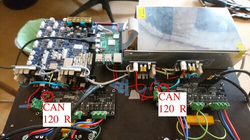

üìùEdit on Gitlab
Status Of This Document
This documentation might still have gaping holes here and there.
If you're building a v4, say hi and connect with other builders in the discord channel.
Table of Contents
Sourcing and Preparing Wiring Loom
 Please see the bill of materials (a Google Docs spreadsheet).
Please see the bill of materials (a Google Docs spreadsheet).
Hardware Assembly
In the repo, there's an Openscad file called layout.scad.
Open that file with Openscad.
It shows all the parts, including where and how they're supposed to be mounted.
 This view of the ceiling unit greets you when you open the layout.scad file with Openscad.
Rotate the view (inside Openscad) by clicking and dragging with your mouse.
Zoom by scrolling your scroll wheel.
This view of the ceiling unit greets you when you open the layout.scad file with Openscad.
Rotate the view (inside Openscad) by clicking and dragging with your mouse.
Zoom by scrolling your scroll wheel.
To help positioning parts on the ceiling unit,
2d print out the layout_a4.pdf
and use it as a template.
As for the circuit boards and the power supply, place them out in a configuration similar to this:
 Click the image to open a larger version.
Works for all images in this manual.
Click the image to open a larger version.
Works for all images in this manual.
Hot tips for circuit board placement:
- Use the spacers shipped with the ODrives also for the Duet3.
- The Raspberry Pi uses spacers that are twice as long, which may be 3d printed (see pi_mount stl in the repo).
- Make sure that the Duet3's USB port and SD slot are not covered by a 1XD card.
- Make sure the Pi's HDMI1 port is not covered by the Duet3.
Motor Brackets
The motor only fits in the bracket if inserted in one exact rotational position.
Moreover, A and D motors fit in a different position than B and C motors, like this:
Notice that the electrical wires from the A and D motors point downwards in the image, while those from the B and C motors point upwards.
It can be tricky to get the nuts into the right places on the motor brackets.
For each bracket,
start with taping a nut to the backside of the encoder holder, like this:
Areas That Must Be Smooth
The line is easy to fray, and 3d-printing sometimes leaves sharp and pointy edges.
It's therefore recommended to sand down the inside of the spool disc, like this:
Also sand the GT2 spool gear's inside, since it will also rub against the line.
Make Sure Spools Rotate Without Wobble
First of all, press a bearing into each spool, and rotate each spool separately on your 8mm spool core rod.
This one is straight enough.
If a spool has warped, it's useless.
Otherwise, if it rotates straight enough, move on to the next step: snapping on the GT2 spool gear.
The spool and the GT2 spool gear snap together with a very tight tolerance.
When you press fit them together, you can usually hear a sharp "tick" each time the two parts' layer lines mesh in place.
A common problem is that the GT2 spool gear is so tight, that it warps the whole spool, and/or doesn't mesh with the same layer line all around the spool.
Check this with a similar test as before.
This one wobbles too much.
If you see wobbly rotation like in the video above, you must take off your GT2 gear from your spool and file/sand down sharp edges and layer lines.
Take off any squeezed out edge from top/bottom layers on both GT2 spool gear, and on the spool itself.
In some cases, I also widen the pocket on the top of the spool, where the inner tooth of the GT2 spool gear sinks into.
Getting all spools to rotate straight will help your machine become more silent, because it won't rub into the inner walls of the spool cover.
It will also make your machine more safe, because it will help the spool cover casettes fully enclose your spools so that line can't escape and get tangled into the motor.
Getting Encoders To Rotate Without Rubbing
The encoders must be mounted perfectly straight onto the motor shaft, so that the motor can rotate freely.
If you hear a rubbing sound from the encoder when you rotate the motor, then you need to adjust the encoder's placement.
The motor bracket tries to help you fixate the encoder perfectly.
But sometimes the encoder ends up with a degree or so of rotation that the bracket won't let you adjust easily.
In those cases, I adjust the rotational position of the encoder like this:
A nose wire strip or zip tie or similar may be used to increase the thickness of one of the encoder holders' arms in one spot.
Its placement along the vertical holder arm adjusts the encoder's rotational position.
Wiring
Warning: The motor wires must be connected in the exact order shown below.
Otherwise torque mode will run backwards and create chaos.
Also, auto-calibration won't work because signs will be reversed.
Note the order of motor wires.
Because of a limitation in RepRapFirmware for the time being (Jan 2022), we must
connect the motor wires in exactly this order.
Risk of Signal Noise On Step/Dir
Another Warning: The step/dir inputs of the ODrives are not opto-decoupled.
This means we will have some signal noise in the all-important step/dir signal wires.
The amount of signal noise depends on the area of the loop described below:
A loop of conductive material is marked in red.
It follows the GND wire between the 1XD board and the ODrive board, crosses over the ODrive board into one of the step/dir wires,
enters the 1XD board, and crosses over the 1XD board to the 1XD's GND connection.
Because both the ODrive and the 1XD boards are connected to GND, there will exist ground loops like the one described above.
Try to make them as small as possible in terms of area.
This is best done by connecting the ODrive's GND and the 1XD's GND together, like shown in the image above.
The risk of step/dir signal noise is inherent in the ODrive v3 design.
I have never had problems with this in practice but I always connect the two GNDs together just in case.
For all other wiring see
The Two CAN Buses
The Duet3 has two CAN buses coming out of its RJ11 (6P4C) contact.
These two CAN buses live separately, in two different pairs of wires.
The two centermost conductors in the 6P4C contact carry the main CAN bus.
It transfers step/dir signals from the Duet3 to the 1XDs.
The main CAN bus goes inside the white wire, from the Duet3 to board 43, to board 42, to board 41, to board 40.
Board 40 should have termination jumpers on. The other 1XD boards should not.
The main CAN bus goes inside the white wire, from the Duet3 to board 43, to board 42, to board 41, to board 40.
Board 40 should have termination jumpers on. The other 1XD boards should not.
The rightmost and leftmost pins are not in use in 6P4C contacts.
So we have two remaining conductors that are not used by the main CAN bus.
The two remaining conductors carry the ODrives' CAN bus.
The jumper wires carry the ODrives' CAN signal from the telephone cable into the ODrive.
The ODrives' CAN bus also goes inside the white wire, at least on my machine.
It goes from the Duet3, through board 43, branches off into one ODrive, the other branch continues through board 42, through board 41, and ends in the second ODrive (left one on the image below).
The 1XD boards does not and can not read the ODrives' CAN bus. It just passes straight through the 1XD boards.
With the ODrive CAN bus wired up, make sure you set the termination resistors correctly:

There are little switches inside the red circles, that flip CAN termination resistors on and off.
Mounting
This part hasn't changed between HP3 and HP4, so I'm linking to old HP3 documentation for now:
Make sure anchors are rigid. Also, make sure your lines form nice Parallelograms (two pairs of parallel sides).
Line Termination
I use the eight shaped stop knot to attach the line to the spool, like this:
The ABC-lines are all terminated in the clamp at the top of the snaily snail:
The clamp is a safety mechanism.
In case of a sudden high force in the line (if someone trips in a line), the clamp is supposed to release the line.
It's therefore important that the line protruding on the back side of the clamp is short.
It's also important that all braiding is combed out near the end of the line so that the line can be clamped down flat,
and no knot or tangle can form on the back side of the clamp, and prevent the safety mechanism from releasing the line.
The D-lines are terminated in the ceiling unit.
I terminate them with a wood screw, like this:
Optional Hoisting System
Screwing the ceiling unit onto the ceiling can be a bit challenging.
I therefore added a hoisting system to my own HP4.
See it in this tweet and this video.
The little CAD models I used are shared here.
The optional hoisting system. Note that the top bearings here are U-groove M4 core bearings (sry, just what I had lying around).
The bearings on the ceiling plate is 623 vgroove bearings, like are used in other places in the Hangprinter v4 design.
Firmwares and Configuration
There is Hangprinter v4 support in official RepRapFirmware Release 3.3 and onwards.
However, at the time of writing this (Feb 17, 2022), it's recommended to use the latest release candidate:
Release 3.4.0rc1 because it brings some important improvements.
Use the most recent 3.4 release on the list if 3.4.0rc1 isn't the most recent one anymore.
Whenever a release candidate or beta release is used, the Raspberry Pi needs to be configured to use
the unstable software repository.
In addition, I (tobben) always publish my latest RepRapFirmware build here:
link.
My personal builds are only meant to be used during debugging or other exceptional circumstances.
Stock ODrivefirmware works for us out of the box.
However, I'm stuck at the 0.5.1 version of ODrivefirmware, because the anti-cogging feature is broken in later releases.
Anti-cogging is used to make torque mode more smooth.
Download the 0.5.1 hex file for your ODrive board here.
How to flash the hex-file to the ODrive board is copied from the
ODrive docs.
If the following doesn't work, take a look at the official ODrive docs instead.
Flash the hex file to your ODrive board with the following command in the terminal:
$ odrivetool dfu <path/to/your/>ODriveFirmware_vX.X-XXV.hex
If it gets stuck at "Putting device XXXXXXXXXXXX into DFU mode...",
pull the power plug, flip the switch from RUN to DFU, and try again.
If successful, power down, flip back to RUN, and do a config restore
$ odrivetool restore-config ~/repos/hangprinter/firmware/ODrive/odrive-config-AB.json
This will set most configuration values about right.
However, there are a few you need to change.
You must measure the correct value with a multimeter over your break resistor.
Open up odrivetool and set odrv0.config.brake_resistance = your_measured_value.
Also, you need to do a full calibration sequence of both axes. Copy these lines into odrivetool one-by-one
and hit Enter in between each.
odrv0.axis0.requested_state = AXIS_STATE_FULL_CALIBRATION_SEQUENCE
odrv0.axis1.requested_state = AXIS_STATE_FULL_CALIBRATION_SEQUENCE
odrv0.axis0.requested_state = AXIS_STATE_CLOSED_LOOP_CONTROL
odrv0.axis1.requested_state = AXIS_STATE_CLOSED_LOOP_CONTROL
odrv0.axis0.requested_state = AXIS_STATE_ENCODER_INDEX_SEARCH
odrv0.axis1.requested_state = AXIS_STATE_ENCODER_INDEX_SEARCH
odrv0.axis0.requested_state = AXIS_STATE_ENCODER_OFFSET_CALIBRATION
odrv0.axis1.requested_state = AXIS_STATE_ENCODER_OFFSET_CALIBRATION
odrv0.axis0.encoder.config.pre_calibrated = True
odrv0.axis1.encoder.config.pre_calibrated = True
odrv0.save_configuration()
odrv0.reboot()
If everything went well and your motors woke up with a silent rotation before entering closed loop position mode,
then you're ready to do the (optional) anticogging calibration.
The anticogging feature makes your torque mode feel smoother if it's enabled and working.
It's not critical for the functioning of the Hangprinter.
Example Config Files
Please refer to the bottom part of my configure_odrive.py ODrivefirmware configuration file for details on how I do anticogging calibration.
PS, there's a similar example config.g for RepRapFirmware also in the repo for your config pleasure.
Calibrating Anchors and Spool Buildup
This has changed a lot between HP3 and HP4.
A computer vision system called hp-mark has been developed to assist, and largely automate, the calibration process.
The system has been built and proved, see this video:
Replicating What's Going On In That Video
Ok, this will be a bit messy.
hp-mark is still very much in beta, and requires the user to be comfortable doing a few things via the Unix terminal.
Our main goal is to be able to run the script called get_auto_calibration_data_automatically.sh.
The computer vision system is called hp-mark.
It consists of
- A camera with LED lights around it,
- A Raspberry Pi who controls the camera and the LEDs,
- Six retro-reflective markers,
- A computer program called hpm
- A main computer who gets images from the Raspberry Pi, and uses hpm to analyze the images.
See the
hp-mark repo,
and in particular the
README.md and the
doc directory for more guidance on how to set up hp-mark.
The rest of this section will describe how to use hp-mark correctly with Hangprinter v4.
The get_auto_calibration_data_automatically.sh script is executed on the main computer.
It expects your camera-connected Raspberry to be available
at the ip called rpi in your /etc/hosts file.
It's also assuming your Duet3 connected Raspberry to be called duet3 in your /etc/hosts.
It's fine if duet3 and rpi are actually the same Raspberry Pi board.
Just configure them to the same ip address.
The Raspberry Pi needs the camera to be connected and calibrated (as described in the hp-mark repo), and it needs ssh to be enabled.
Enabling ssh on a Raspberry pi might involve having to connect it to a display, and seek out Preferences -> Raspberry Pi Configuration in a graphical user interface.
The get_auto_calibration_data_automatically.sh script also
needs a version of raspistill that matches your lens, or else your images' colors will be tinted.
To get the one I use (matching my Arducam lo-distortion 45 deg lens), do
$ ssh pi@rpi
$ mkdir -p repos
$ cd repos
$ git clone https://github.com/ArduCAM/NativePiCamera.git
$ cd NativePiCamera/bin
$ chmod u+x raspistill_CS_lens
The duet3 official image is one comes with the camera disabled by default.
To enable it do
$ sudo raspi-config
$ [Interface Options] -> [Camera] -> [Enable] -> [Reboot yes]
We also have some LED rings around the lens (I have 20. Don's use more than 20, since the Rpi's 5V pin can't output much current).
To light up the LEDs, I used these pins on the camera-connected Raspberry:
If rpi and duet3 Are One And the Same Board In Your Setup
The Duet3 doesn't use any of pins 4, 6, or 12, although its connector covers them up.
To work around the connector, you can created a distance between Rpi and the connector with nine short jumper wires like this:
Connect the Raspberry's pins 17-25 with the Duet, as they would have been connected through the standard connector.
Power the Raspberry Pi with a separate wallplug power supply.
The official Raspberry Pi Power supply is recommended.
Anyways...
Here's how you get code that lights up the LEDs:
$ ssh pi@rpi
$ mkdir -p repos
$ cd repos
$ git clone https://gitlab.com/tobben/rpi_ws281x.git
$ sudo apt install python3-pip
$ sudo pip3 install rpi_ws281x
Test If Camera Usage Works
On your main computer, try to take an image and analyze it:
$ cd <path-to>/hp-mark/use
$ ./use_ssh.sh --show result
If everything worked, the LEDs should have flashed, an image should be taken, downloaded, analyzed by your hpm program,
and the result (an image) should be shown on the screen, like this:
The console output should be similar to this:
$ ./use_ssh.sh --show result
/home/pi/repos/hp-mark/use
Captured image remotely: /home/pi/repos/hp-mark/use/images/DiUBh.jpg.
Copies home:
DiUBh.jpg 100% 4512KB 4.9MB/s 00:00
/home/tobben/repos/hp-mark/use
Will execute:
../hpm/hpm/hpm ../hpm/hpm/example-cam-params/loDistCamParams2.xml ../hpm/hpm/example-marker-params/my-marker-params.xml ./images/DiUBh.jpg --show result
[5.22761, -28.5536, 6.5542];
Double Check Torque Mode
The get_auto_calibration_data_automatically.sh script will not only use your camera.
It will also put your motors in torque mode.
It assumes the
Torque_mode macro
has been installed into your macro folder on the Duet3.
Play with the torque mode script in the web interface before running the full calibration script.
For example, in the web interface, go to the console and to
set motor A in torque mode, with 0.02 Nm of torque.
Feel the spool gently with your and and confirm that the motor tries to pull line inwards onto the spool
M98 P"/macros/Torque_mode" A0.02
Repeat for all motors ABCD.
Getting To The Actual Calibration
With camera and torque mode macro in place, if all the stars align, it should be possible for you to collect the calibration data like this:
$ cd path/to/hp-mark/use
$ ./get_auto_calibration_data_automatically.sh --show result
The --show result option will make hpm stop and show you each measurement when it's done, and wait for you to press
Enter before it continues.
Example of a successful data point collection with the --show result option enabled.
After collecting 18 data points (don't worry if a few were unsuccessful or printed a warning), it prints out the data it has collected
in a format that copy/paste friendly for the next script we're going to use: simulation.py.
The output of simulation.py needs to be adjusted by yet another script, called just script.m.
If again, all stars align, you can re-run simulation.py as described inside script.m, and you'll end up with a perfect set of M669 and M666 commands, to copy/paste into your config.g.
For anyone who have reached this far: I salute you.
Reach me via Discord and tell me you need the auto calibration stuff, and I'll up-prioritize automating further and documenting better.
Slicing and Usage
I've published the Prusa Slicer configs that I use at gitlab.com/tobben/prusaslicer-configs.
Avoid Line Collisions
Before you start a large print, it's recommended to check if your model fits the print volume or not.
This is done with line-collision-detector, a tool that is developed specifically for Hangprinter build volume verification.
line-collision-detector spits out a debug stl like this one upon detecting collision (if you asked for it).
Please note that many slicers will auto center the model before slicing it.
line-collision-detector will not do that.
Since you probably want to check if the centered version of your model collides with lines or not, it's recommended to first import your model in the slicer, and then export it from the slicer as an stl, and then run it through the line-collision-detector.
Final Words
Building, mounting, calibrating, and running a HP4 is a big undertaking, and many of the steps are sparsely documented, but you are not alone.
Be sure to check out the resources, there are some quite good ones.
If you spot an error or a missing link in the documentation, then please fix it and contribute the fix back to the repo.
But also, do come by the Discord and say hi, or have a chat via Gitlab merge request or issue.
- tobben üë∑
The raw text source of this manual is published under the GPL-2.0 license, and is being maintained in the hangprinter-org repo. All images and videos are also published under the GPL-2.0.